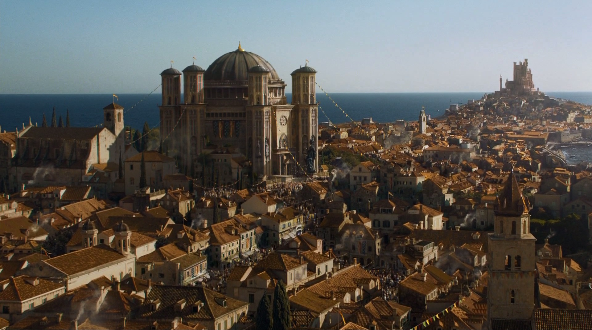
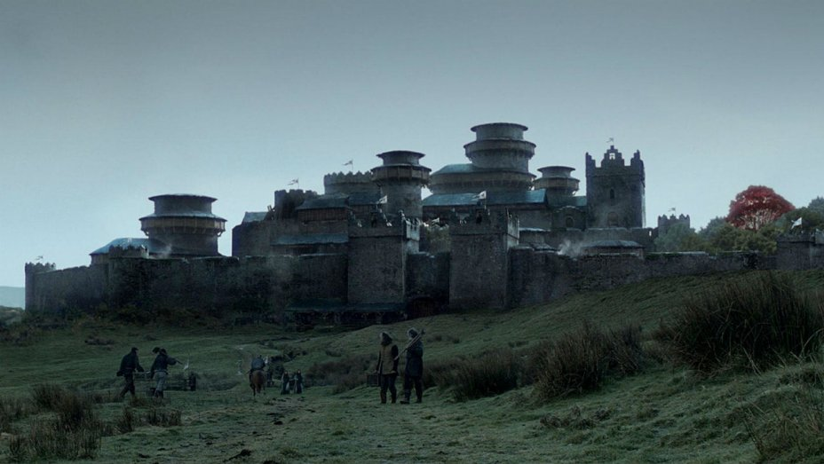

Time Left:
01:41
 
Game of Thrones Trivia
Who established the Targaryen dynasty in Westeros?
Aemon, The Dragon Knight
Maegor, The Cruel
Aegon, The Conqueror
Brynden Blackfish
Who built Winterfell and The Wall?
Bran, The Builder
Cotter Pyke
Prince Theon of Winterfell
Maester Luwin
What is the capital of the West in Westeros?
Lannisport
The Vale
High Garden
Casterly Rock
What city does Danaerys take refuge in shortly after the birth of her dragons?
Lazereen
Qohor
Dragon Stone
Qarth
What is the name of the red priestess who councils Stannis Baratheon?
Mirri Maz Dur
Melisandre
Osha
Salaador San
Who is know as the Red Viper of Dorne?
Quentyn Martell
Princess Myrcella
Oberyn Martell
Gregor Clegane
Who is known as King Beyond The Wall?
Mance Rayder
Varamir Six Skins
Jeor Mormont
Jojen Reed
Who was Arya Stark's Dancing Master?
Meryn Trant
Septa Mordane
Syrio Forell
Jaqen Hagar
What is said of red-headed wildlings?
Born with fire
Fire Tops
Kissed by Fire
The Shield that guards the realms of men
Who was known as the Sword of the Morning?
Ser Arthur Dayne
Ser Mandon Moore
Ser Baristan Selmy
Strong Belwas